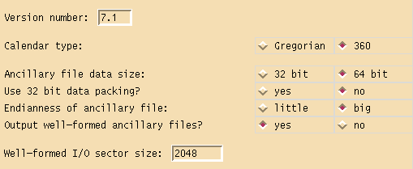
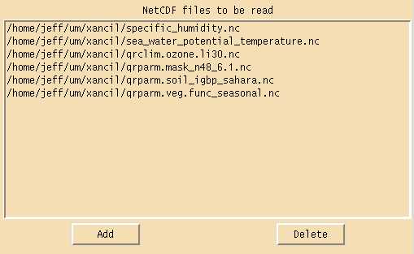
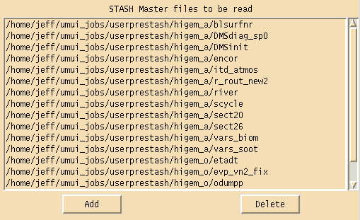
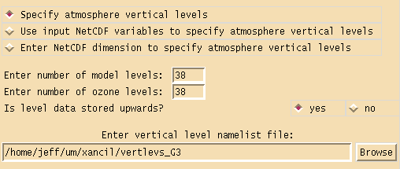
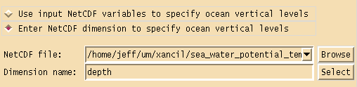
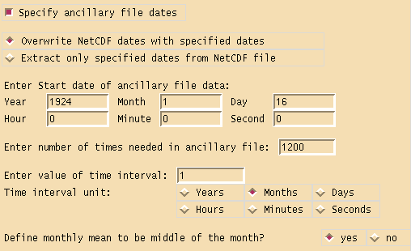
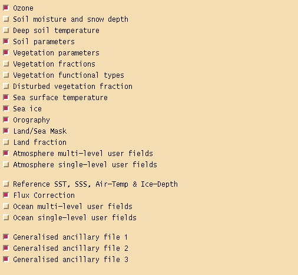

Xancil (version 0.58)¶
Introduction¶
Xancil is a X-windows based application for creating Unified Model ancillary files from netCDF input files. The current version supports the creation of the following atmosphere ancillary files
Ozone
Soil Moisture and Snow Depth
Deep Soil Temperatures
Soil Parameters
Vegetation Parameters
Vegetation Fractions
Vegetation Functional Types
Disturbed Vegetation Fraction
Sea Surface Temperatures
Sea Ice
Orography
Land/Sea Mask
Land Fraction
Multi-level User fields
Single-level User fields
along with these ocean ancillary files
Reference SST, SSS, Air-Temp & Ice-Depth
Flux Correction Fields
Multi-level User fields
Single-level User fields
and finally Generalised Ancillary Files can be used for files which don’t fit into the above categories.
Ancillary files can be created for use in both old and new dynamics versions of the UM, and can be in 64 bit IEEE format, including the option of 32 bit data packing, or 32 bit IEEE format. The files can be written in either big or little endian format. Well formed IO (WFIO) ancillary files can be created with a user specified sector size. See the Configuration panels section for further details.
Xancil will use the input netCDF grid information as the output grid for the ancillary files, so any data interpolation should be done before using Xancil. It doesn’t matter whether the input latitude coordinate goes from north to south or south to north, Xancil will ensure the ancillary files use the correct orientation for the specified version of the UM. Similarly longitude values of global grids will be adjusted to the (0,360) degree range expected by the UM. So for example if the input netCDF longitude coordinate is (-180,180) degrees, it does not have to be adjusted for use with Xancil. Ocean ancillary files have two extra wrap-around points in the longitude direction, if the input netCDF file doesn’t include these points they will be added by Xancil. Conversely if the input netCDF file includes wrap-around points then Xancil will remove them when creating atmosphere ancillary files. Xancil will create ancillary files on a limited area rotated pole grid, if the input netCDF file includes attributes to define the rotated pole. There are two methods of defining rotated poles which Xancil recognises, the first is to use a two-element floating point attribute north_pole which specifies the (longitude,latitude) coordinates of the rotated north pole. This attribute is created by Xconv when creating rotated pole netCDF files. The second method is to use the netCDF CF Metadata convention, where the variables on a rotated grid define an attribute grid_mapping, which specifies the name of another variable which supplies the coordinates of the rotated north pole. See the CF standard documentation for further details.
The current state of any information entered into the Xancil panels can be saved as a job file using one of the Save Job or Save Job As buttons and reloaded at a later date using the Load Job button. The job file consists of a list of Tcl variables each of which corresponds to an input in a Xancil panel. The Save Namelist or Save Namelist As buttons convert these Tcl variables into a Fortran namelist file and this is used as input to an executable file, which creates the UM ancillary files. By default this executable is called mkancil and is located in the same directory as the xancil executable. The default name for the namelist file is xancil.namelist but this can be changed by using the Save Namelist As button. The Create Anc. files button will create the namelist file and automatically run mkancil to create the UM ancillary files. The Quit button will quit Xancil, any input data will be lost unless a job file has been saved.
Xancil can be given the following command line arguments:
-execute : Create namelist and run ancillary executable
-x : As -execute
-execname execfile : Specify pathname of ancillary executable
(default /work/n02/n02/hum/bin/mkancil0.50)
-xn execfile : As -execname
-jobfile jobfile : Load jobfile into xancil
-j jobfile : As -jobfile
-namelist namelist : Create namelist file called namelist
(default xancil.namelist)
-nl namelist : As -namelist
-namelisttype nltype : Specify namelist type, either old or f90
(default f90)
-script script : Use xancil to run tcl script
-sc script : As -script
-usage : Print this message
Examples of command line usage are, run Xancil with the specified job file pre-loaded
xancil -j xancil_example.job
A previously saved job file can be loaded into Xancil, the namelist file created and the mkancil executable run to create the UM ancillary files without using the X-windows interface
xancil -j xancil_example.job -x
Alternatively the mkancil executable can be run directly with the saved namelist file as input
mkancil < xancil.namelist
More elaborate scripting is also possible see Examples of non-interactive Xancil usage.
Download Xancil¶
Updated Version 0.50 (February 19 2010)¶
Date/times in PP headers for vegetation functional types ancillary file were incorrect.
Download a gzipped tarball of the Mkancil source code
Download gzipped tarballs of Xancil/Mkancil executables, for various platforms
Version 0.51 (July 01 2011)¶
General bug fixes
Add support to read netCDF4 input files
Add slab model option to generalised ancillary file creation section
Version 0.52 (October 13 2011)¶
Add orographic gradient x/y components to orography section
Version 0.53 (August 23 2012)¶
Add option to select horizontal grid type in generalised ancillary file creation section to enable correct creation of ancillary files on u,v grid
Add support for variable resolution grids
Add unfiltered orography to orography section
Version 0.54 (November 28 2012)¶
Fixed problem with reading grid dimensions from fields which don’t exist as they aren’t being output
Fixed problem with reading seconds expressed as a real number in the units attribute
Version 0.55 (March 05 2015)¶
Updated CF standard_names to include all names used by CF-python
Included later UM versions (up-to vn9.2) of STASHmaster information
Updated font handling to work better with tcl/tk versions greater than 8.4
Add option to create calendar independent ancillary files
Download a gzipped tarball of the Mkancil source code
Download gzipped tarballs (Linux) or a dmg file (OS X) of Xancil/Mkancil executables
Version 0.56 (November 15 2016)¶
General bug fixes
Included later UM versions (up-to vn10.6) of STASHmaster information
Updates to allow multi-level ancillaries to be created for ENDGame configurations
Download a gzipped tarball of the Mkancil source code
Download gzipped tarballs (Linux) or a dmg file (OS X) of Xancil/Mkancil executables
Version 0.57 (February 01 2017)¶
Fixed bug writing user ancillary files
Changes to allow creation of ancillary files > 16 GBytes
Download a gzipped tarball of the Mkancil source code
Download gzipped tarballs of Xancil/Mkancil executables
Version 0.58 (May 13 2020)¶
General bug fixes
Included later UM versions (up-to vn11.6) of STASHmaster information
Improve support for ENDGame grids
Improve handling of multilevel fields
Add ability to specify pseudo levels (e.g. surfaces types)
Improve metadata auto completion in generalised ancillary file panel
Download a gzipped tarball of the Mkancil source code
Download gzipped tarballs of Xancil/Mkancil executables
To compile Mkancil read the README file contained in the tar file. If you modify Mkancil then Xancil options -execname or -xn need to be used to specify the new executable pathname. By default Xancil expects to find Mkancil in the same directory as itself.
Configuration panels¶
There are three configuration panels, the first one is for specifying the type and output format of the ancillary files along with reading in the netCDF input files and any user STASHmaster files needed.
The version number specified is used in the ancillary file headers and also determines what sort of vertical levels are used. For version numbers less than 5.0 the vertical coordinate type is hybrid sigma pressure, otherwise the vertical coordinate type is hybrid height. The calendar type can be either Gregorian or 360 day years. Ancillary files can written out in either 32 bit or 64 bit IEEE format, with 64 bit files having the option of packing the data as 32 bit values. Packing the data will make the file almost 50% smaller but will also lose floating point accuracy. Ancillary files can also be written in either big or little endian format. The size and endianness of the data needs to be chosen to match what the UM expects, on HECToR and at the Met Office this is 64 bit big endian data. HECToR uses byte swapping code to read/write big endian data as its native format is little endian. Well formed ancillary files have their data records written out in multiples of the given sector size, this can have performance advantages on certain machines and also makes the files slightly larger. The Xancil default is to output well formed ancillary files with a sector size of 2048, this what the Met Office use. There is little advantage playing around with this parameter, either use the default or switch it off. Warning later versions of the UM won’t work unless the ancillary file is well-formed.
NetCDF files can be pre-loaded in this section of the configuration panel, this allows the user to select the input netCDF file via a drop down menu when using the ancillary file creation panels.
Any user STASHmaster files needed in the creation of ancillary files can be loaded in this section of the configuration panel. These files add to or override any values found in the default STASHmaster files which are built into Xancil. STASHmaster files are used when creating user and generalised ancillary files and tell Xancil what the name of the ancillary field is, what the STASH and PP codes are, what the level type is, what the data type is and finally what part of the field, if any, is to be masked. All this information, except the field name, can be over-ridden by the user if necessary.
The second configuration panel is for defining the vertical grid structure of the ancillary files and supplying a global time definition.
If the following atmosphere ancillary files are being created, ozone, multi-level user ancillaries or generalised ancillaries with multi-level data, then the atmosphere vertical levels need to be defined. There are three options available to define these levels. Using the first option vertical levels can be defined via a namelist file, entering the number of model levels and the number of ozone levels and specifying whether the input data stored in the netCDF files is ordered from the bottom of the atmosphere upwards or from the top of the atmosphere downwards.
The format of the vertical namelist file differs depending on whether the model version is using hybrid sigma pressure coordinates or hybrid height coordinates. In the first case the namelist group name is VERTICAL and can be extracted from the RECONA file generated by the UMUI for the job in which the ancillary files created are to be used. Note reconfiguration must be turned on in the UMUI to create a RECONA file. For example a vertical namelist file for a 19 level HadAM3 run would look like this
&VERTICAL
METH_LEV_CALC= 5,
ETAH= 1.000000000000,0.994000000000,0.956000000000,
0.905000000000,0.835000000000,0.750000000000,0.650000000000,0.550000000000,
0.460000000000,0.385000000000,0.325000000000,0.275000000000,0.225000000000,
0.175000000000,0.125000000000,0.075000000000,0.040000000000,0.020000000000,
0.010000000000,0.000500000000,
MIN_PRS_HLEV= 17, MAX_SIG_HLEV= 5,
&END
For the second case of hybrid height coordinates the namelist group name is VERTLEVS and the namelist file needed is the same as that used in the UM run for which the ancillary files are being generated. The location of this file is referenced in the UMUI output file INITHIS under the variable name VERT_LEV. If Xancil is being run on a different machine to that which is running the UM, then the namelist file will need to be copied over. For example a vertical namelist file for a 38 level HadGAM run would look like this
&VERTLEVS
Z_TOP_OF_MODEL= 39254.833576,
FIRST_CONSTANT_R_RHO_LEVEL=30,
ETA_THETA= 0.0,
.0005095, .0020380, .0045854, .0081519, .0127373,
.0183417, .0249651, .0326074, .0412688, .0509491,
.0616485, .0733668, .0861040, .0998603, .1146356,
.1304298, .1472430, .1650752, .1839264, .2037966,
.2246857, .2465938, .2695209, .2934670, .3184321,
.3444162, .3714396, .3998142, .4298913, .4620737,
.4968308, .5347160, .5763897, .6230643, .6772068,
.7443435, .8383348, 1.0000000,
ETA_RHO=
.0002547, .0012737, .0033117, .0063686, .0104446,
.0155395, .0216534, .0287863, .0369381, .0461090,
.0562988, .0675076, .0797354, .0929822, .1072479,
.1225327, .1388364, .1561591, .1745008, .1938615,
.2142411, .2356398, .2580574, .2814940, .3059496,
.3314242, .3579279, .3856269, .4148527, .4459825,
.4794523, .5157734, .5555529, .5997270, .6501355,
.7107751, .7913392, .9191674,
&END
The second and third options for defining atmosphere vertical levels use the netCDF CF Metadata convention. Either specify one netCDF dimension to define the vertical levels for all ancillary files or every netCDF field used to generate an ancillary file with multiple levels will define the needed vertical coordinates. The netCDF dimension used to define the vertical levels must have a standard_name attribute of either atmosphere_hybrid_sigma_pressure_coordinate or atmosphere_hybrid_height_coordinate, depending on the coordinate type. The dimension must also include the formula_terms attribute used to associate terms in the definition of the vertical coordinate with variables in a netCDF file. See the CF standard documentation for further details. If the dimension includes the bounds attribute, then this is used to calculate the half level values needed in the ancillary file PP headers. If this information is not available then these PP headers will be set to zero. If hybrid height coordinates are being defined using option 3, then whether the coordinate defines theta or rho levels needs to be specified. If an ozone field is being created which has a different number of levels to the standard number of model levels, the number of ozone levels should also be entered.
If the following ocean ancillary files are being created multi-level user ancillaries or generalised ancillaries with multi-level data, then the ocean depth levels need to be defined. Xancil expects either the specified vertical netCDF dimension or the netCDF field used to create the multiple level ancillary field, to contain the depth levels with units of metres. It doesn’t matter if the netCDF dimension is defined from the top of the ocean down or from the bottom of the ocean up, or if the depth levels are given as positive or negative values, Xancil will convert the dimension and the field into the correct ancillary format.
Ancillary files soil moisture and snow depth, deep soil temperatures and generalised ancillary field with data on soil levels, need to have the thickness of the deep soil levels defined. This section of the grid configuration panel allows these values to be specified. By default the standard four soil level thicknesses used in most UM runs are defined.

Although each time dependent ancillary file creation panel can define the dates for its file, a global date definition can also be specified in the grid configuration panel. This makes specifying the same dates for multiple files easier, and any file which has a different date can override the values set in this panel. It is not necessary to specify the ancillary file dates if the dates in the netCDF file are used. The specified dates can either be used to ignore the netCDF dates and replace them, or they can be used to extract a subset of the fields in the input netCDF file. The dates are specified by entering a start date, the number of times needed and the value of the time interval. If the time interval unit is months and the answer to “Define monthly mean to be middle of the month?” is yes, then the date of each time in the ancillary file will be the middle of the month. This is useful if a ancillary file is created with monthly mean data and uses the Gregorian calendar.
The third configuration panel can be used to select which ancillary files are to be created. Although each individual ancillary creation panel can be used to switch on or off that ancillary file, it can sometimes be more convenient to select ancillary files via this panel.
General ancillary panel information¶
Specific ancillary panel information¶
Ozone¶
Soil Moisture and Snow Depth¶
Deep Soil Temperatures¶
Soil Parameters¶
Vegetation Parameters¶
Vegetation Fractions¶
Vegetation Functional Types¶
Disturbed Vegetation Fraction¶
Sea Surface Temperatures¶
Sea Ice¶
Orography¶
Land/Sea Mask¶
Land Fraction¶
Reference SST, SSS, Air-Temp & Ice-Depth¶
Flux Correction Fields¶
Generalised Ancillary Files¶
Multi-level User Fields¶
Single-level User Fields¶
Modify Mkancil source code¶
Examples of non-interactive Xancil usage¶
To read in a previously saved job file and create the UM ancillary files defined by it enter this command line
xancil -j example.job -x
As there are a lot of variables defined in a job file the best approach to scripting Xancil is to create an initial job file which has most of the setup you need and then only change the variables which are different in the script file. For example to create multiple ozone ancillary files from different netCDF input files, assuming everything else needed has been setup using Xancil and saved to a job file called ozone.job, use this script
#!/bin/sh
# Create xancil script file (Needs to be written in tcl)
cat << \EOF > ozone.tcl
# Load in initial job file
source "ozone.job"
set n 12
# Create n ozone ancillary files
set i 1
while {$i <= $n} {
# Overwrite ozone input and output file names
set ozone(file_in) ozone_$i.nc
set ozone(file_out) ozone_$i
# Create namelist file from Tcl variables
create_namelist ozone.namelist
# Run executable to create ozone ancillary file
run_exec
incr i
}
EOF
# Run xancil with the above script file
xancil -sc ozone.tcl
Run this script and Xancil will create 12 ozone ancillary files from 12 netCDF files.